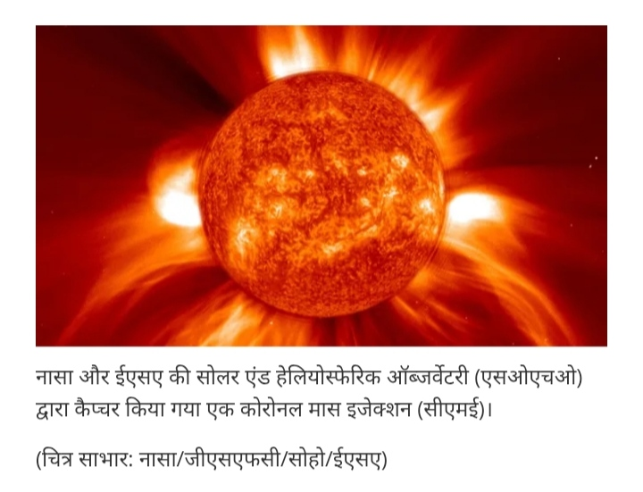

कोरोनल मास इजेक्शन: ये क्या होते हैं और इनका निर्माण कैसे होता है?
1. कोरोनल मास इजेक्शन (CME) क्या है?
प्लाज्मा के ये विशाल बादल बिजली ग्रिड और उपग्रहों को भारी नुकसान पहुंचा सकते हैं, लेकिन साथ ही आश्चर्यजनक अरोरा प्रदर्शन को भी जन्म दे सकते हैं।कोरोनल मास इजेक्शन (सीएमई) सूर्य के वायुमंडल - कोरोना - से प्लाज्मा और चुंबकीय क्षेत्र का एक बड़ा निष्कासन है।सौर ज्वालाओं (जो प्रकाश की गति से यात्रा करते हुए, पृथ्वी तक मात्र 8 मिनट में पहुँच जाती हैं) की तुलना में , सीएमई अपेक्षाकृत धीमी गति से यात्रा करते हैं। राष्ट्रीय महासागरीय और वायुमंडलीय प्रशासन (एनओएए) के अंतरिक्ष मौसम पूर्वानुमान केंद्र के अनुसार, लगभग 1,900 मील प्रति सेकंड (3,000 किलोमीटर प्रति सेकंड) की अपनी अधिकतम गति पर, सीएमई लगभग 15 से 18 घंटों में पृथ्वी तक पहुँच सकते हैं, जबकि लगभग 155 मील प्रति सेकंड (250 किलोमीटर प्रति सेकंड) की धीमी गति से यात्रा करने वाले सीएमई को पहुँचने में कई दिन लग सकते हैं । यात्रा में लगने वाला यह अपेक्षाकृत धीमा समय उपयोगी है क्योंकि इससे हमें ऐसे आगमन की तैयारी के लिए अधिक समय मिल जाता है। सीएमई बिजली ग्रिड, दूरसंचार नेटवर्क और परिक्रमा कर रहे उपग्रहों को भारी नुकसान पहुंचा सकते हैं और अंतरिक्ष यात्रियों को विकिरण की खतरनाक मात्रा के संपर्क में ला सकते हैं। दूसरी ओर, सीएमई दुनिया भर के खगोल प्रेमियों के लिए एक सुखद अनुभव होते हैं क्योंकि ये प्रभावशाली अरोरा दृश्यों को जन्म दे सकते हैं जो उनकी सामान्य ध्रुवीय सीमा से परे अक्षांशों पर भी दिखाई देते हैं।

चित्र: सूरज की सतह से निकलता भयंकर प्लाज्मा का तूफान (CME)यह तूफान अंतरिक्ष में लाखों किलोमीटर प्रति घंटे की रफ्तार से यात्रा करता है। जब यह धमाका सूरज की सतह पर होता है, तो यह अपने साथ रेडियोधर्मी विकिरण और चार्ज्ड पार्टिकल्स लेकर आता है जो पृथ्वी की दिशा में भी आ सकते हैं।
2. ऑरोरा (Aurora): आसमान का कुदरती जादू
जब CME से निकले ये कण पृथ्वी के चुंबकीय क्षेत्र (Magnetic Aura) से टकराते हैं, तो पृथ्वी की ढाल इन्हें ध्रुवों (Poles) की तरफ मोड़ देती है। जब ये कण हमारे वायुमंडल की गैसों (जैसे ऑक्सीजन और नाइट्रोजन) से टकराते हैं, तो एक अद्भुत चमक पैदा होती है। इसे ही ऑरोरा (Aurora) कहते हैं।
 चित्र: पृथ्वी के ध्रुवों पर दिखने वाली खूबसूरत रोशनी (ऑरोरा)
चित्र: पृथ्वी के ध्रुवों पर दिखने वाली खूबसूरत रोशनी (ऑरोरा)
उत्तरी ध्रुव पर इसे 'ऑरोरा बोरेलिस' और दक्षिणी ध्रुव पर 'ऑरोरा ऑस्ट्रेलिस' कहा जाता है। ऑक्सीजन से टकराव पर हरा रंग और नाइट्रोजन से टकराव पर नीला या बैंगनी रंग दिखाई देता है।
निष्कर्ष
CME और ऑरोरा हमें दिखाते हैं कि सूरज की सतह पर होने वाली हलचल हमारी पृथ्वी को किस तरह प्रभावित करती है। यह विज्ञान और कला का एक अनोखा संगम है।
© 2026 संदीप चौहान - भूगोल और विज्ञान ब्लॉग